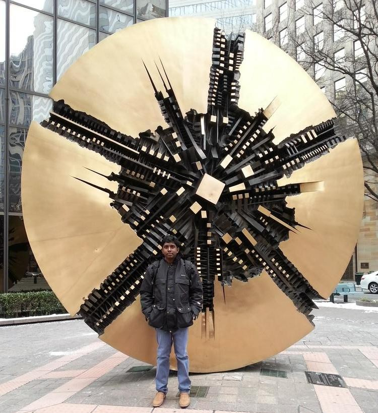

Photo Captures
Moments which I captured during my visits to places and events around the world
Switzerland
Breath taking mountains and nature of Switzerland. Few captures I got during my visit to Zurich
Sanfrancisco
One of the wonderful cities on the planet. Captures cover Golden gate bridge, Google HQ, Fremont, NASA's Ames Visitor Center, Facebook
Hyderabad Visit
Salar Jung museum - Amazing collection of sculptures, paintings, carvings, textiles, manuscripts, ceramics, metallic artefacts, carpets, clocks, and furniture, Golconda fort
Las Vegas Trip
caesars palace, here and there in Las Vegas

PIMA Air space museum
One of the largest aerospace museum located in Tucson, Arizona
Grand Canyon
Grand Canyon, Antilop Canyon, Horse shoe bend, Devils bridge

Mifos Summit
Captures from Mifos global summit 2015 held in Emirates of Saharaj

North Carolina
First onsite client engagement in NC.
Kandalama
Memorable 3 days stay at Kandalama heritance with WSO2 team
Kithulgala Trip
Must visit place in beautiful Sri Lanka. Adventurous white water rafting in Kithulgala river and delicious Sri Lankan food with university mates